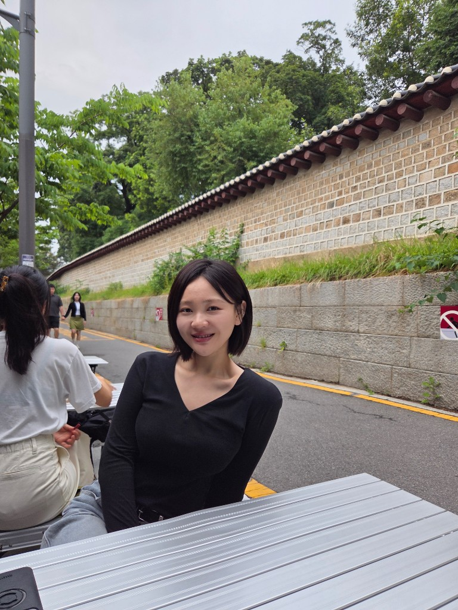
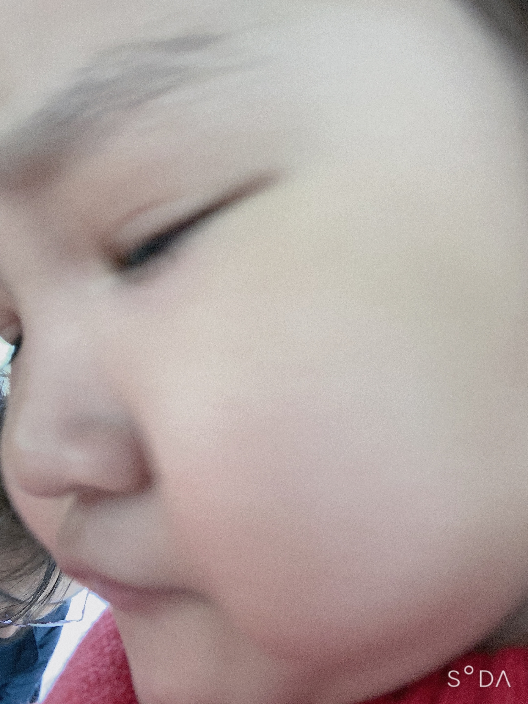

전략/기획 인턴십
2024조사·문서화·실행 지원을 통해 조직의 의사결정 과정을 경험했습니다.
언어로 문화를 읽고,
법과 인권의 시선으로 사회를 해석합니다.
I study culture through language, and build impact through policy, rights, and people-centered work.
저는 북한 양강도 혜산에서 태어나 자유와 인권의 의미를 삶으로 배워왔습니다. 어린 시절의 경험은 저에게 사람의 존엄과 권리를 가장 먼저 생각하는 태도를 남겼습니다.
현재는 국민대학교 중국어문학 전공·공법학 부전공 기반으로, 언어·정책·인권을 함께 이해하는 실무형 인재로 성장하고 있습니다. 현장에서 문제를 듣고, 데이터와 기록으로 구조화해 해결안을 만드는 과정을 좋아합니다.
인턴십, 교환학생(상해), NGO·인권 활동을 통해 다양한 배경의 사람들과 협업해왔고, 앞으로도 사회적 가치를 만드는 기획자/PM으로 기여하고 싶습니다.
자기소개서 상세보기
국민대학교 중국어문학과
국민대학교 공법학 부전공
상해 교환학생 프로그램 수료
국민대학교 중국어문학과 입학
공법학 부전공 시작
상해 교환학생 프로그램 참여
인권·국제협력 주제 연구 및 프로젝트 진행
“독재정권에서 태어나 자유와 인권의 부재를 체감했던 경험은, 지금의 저를 움직이는 가장 큰 원동력입니다.” 자서전 내용 일부를 바탕으로 핵심 서사를 정리했습니다.
인권, 국제협력, 기획 기반 프로젝트에서 함께 성장할 기회를 기다리고 있습니다.
